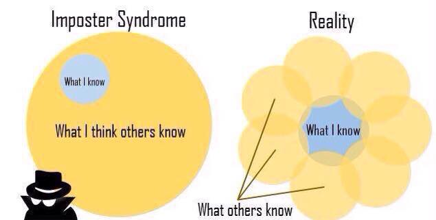

job seekers
new Software Engineering Job Seekers: So you've finally started to look for a job or have a job already. Great! This is only the beginning of the journey...
Continuing Education
1. Dive into your next role.
The worst thing you can do is be worried about your next step before doing a great job where you are. Dive into it and be excited about coming to work everyday. If you can't find some aspect about your current place that you love and get excited about, it won't change at a different job.
2. Continue to learn
Another trap is to be complacent. This is a tough job but there barriers to entry are really low. Don't think that you can stop learning. I've experienced this firsthand. Since getting hired it can be tough to bring yourself to have the energy afterwork to read, learn, and blog more, but please push yourself. I've been reading books, such as 'Cracking the Coding Interview', 'Programming Pearls', and Data Structures and Algoriths in Python, to prepare for my future and to keep learning.
3. Contribute to open source
Contributing to open source is even better than resume, it shows that you love what you work on enough to work on it after work. I've been excited about maintaining my open source repos and adding features and helping document tools I've started to use already.
4. Attend groups and meetups
Since beginning to work, another trap is to go home and not take advantage of the great meetups and cultures available locally. You can meet great connections for future jobs as well as interesting people at meetups. I've gotten interviews, ones I certainly wasn't qualified for, simply by walking up to people at groups, inviting yourself to dinner, and making myself a part of the network.
Finding jobs
One of the most interesting and helpful aspects of the coding bootcamp process is that there are plenty of job resources and people that you can connect to instantly. I was hired where I work now primarily from within this network (from one of my cohort friends in fact) so it always pays to be kind and on good terms with all your connections.
1. Really dig deep into your own network.
Did deep. Every person you've ever met will need to be called upon throughout the process. I've been talking to many of the friends I had in college and graduate school, and many have been crucial to getting me interviews and helping me pursue opportunities. Be open with your needs and remember to thank them and let them know when you find something and return the favor.
a. Run each company through Linkedin and see who you know there, and directly ask for help.
I've often had the experience where I've never heard of a company, then ran the company through linkedin, and found that someone I know works there. The moment I've contacted my friend there, they were happy to help, even though we had not talked for years. Ultimately, I think people are happy to spread real opportunity and get people they are comfortable with rather than hit the open market. One ancedote I think of immediately is I had a friend mention shortly after they post a job nearly 150 resumes come within a day, but only 3 were through referral, and all three were indeed better suited, got interviews, and one was chosen. Be one of the three recommended. I can tell you that of my interviews and offers, a super majority of them came when I asked someone on the inside.
2. Expand your own network.
Recently after accepting a job offer, I proceeded to go into San Francisco, and meet with three people working at three different companies simply to discuss what they were doing and learn more about them. I told them I had a gig, and learned a bunch of the stuff I'm writing here. Addtionally, I had the chance to turn the tables and interview them. This may be optimistic, but in all honesty I don't think the companies like interviewing the way they do anyways. Some of the people I talked to mentioned that their subsequent jobs were offered through more informal interview means, and I think it makes a lot of sense.
3. Pay it forward.
Remember how hard your job search was when people come down the pipeline. I've met quite a few former bootcamp students as well as classically trained engineers and it's remarkable how quickly people can forget when they needed help and how they got to where they got. I will not and I intend to help as many people learn this industry. Ultimately, social networks are a tyranny ruled by it's weakest member (appropriated from Shaw).
4. Take a good offer. There may not be a great offer coming.
I have interviewed at big companies, at Github, at Uber, and Youtube, as well as numerous smaller companies. I utlimately chose Ziploop, the company I work for now, primarily because of the optimization of opportunity (Ziploop, where I'm the 4th engineer, gave me the opportunity to work fullstack from day one, and learn an entire codebase), as well as it was the only offer I had. I would recommend to anyone looking to take the offer they have, it's better to be working than looking, and I think you'll find great things about each opportunity. Breaking through to the first job is the hardest leap and it will be very tough for most.
Preparing for software engineering interviews:
Links for job seekers | Language characteristics
I wanted this space to be a location where I could post all the things that I'm reading as I prepare for my interviews... there has been a significant amount of preparation especially since many of the large companies I'm targeting really are steeped into deep computer science interview questions, so much so that even company representatives and my friends on the inside have been slipping me leads to get a chance. Here is a brief collection:
Here's something I keep in mind all the time.

How do you determine one outlying heavy ball using a scale only three times?